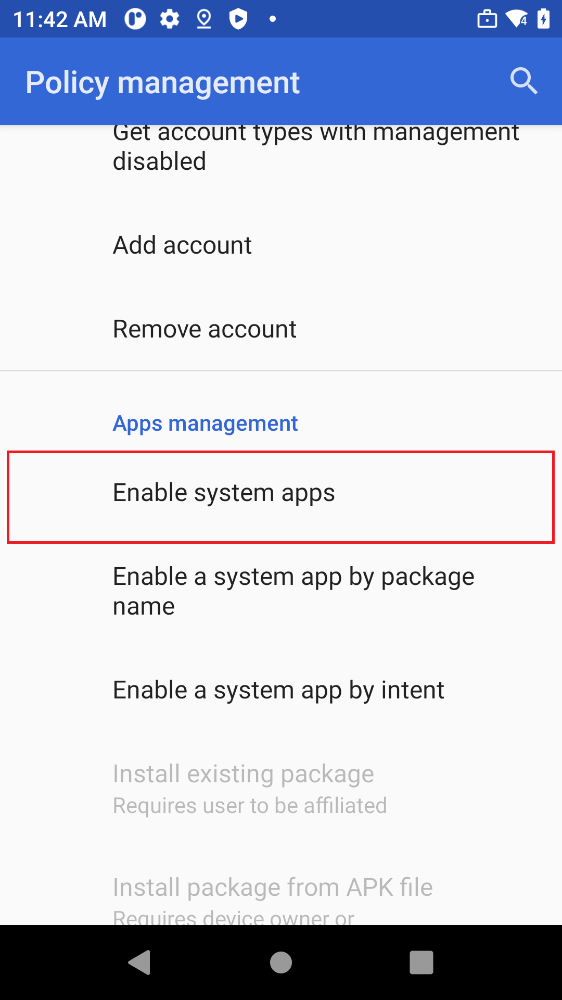
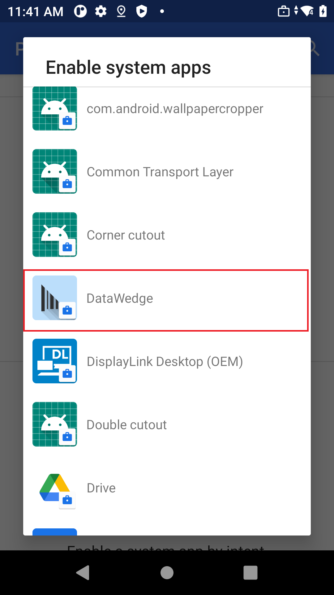
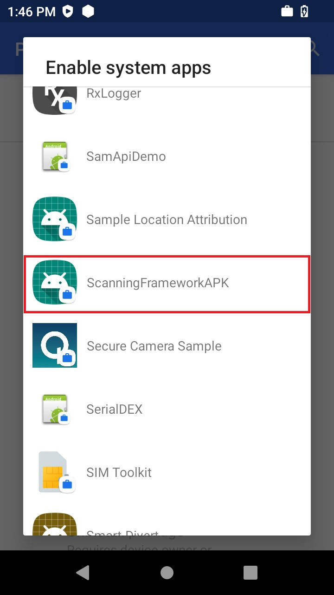
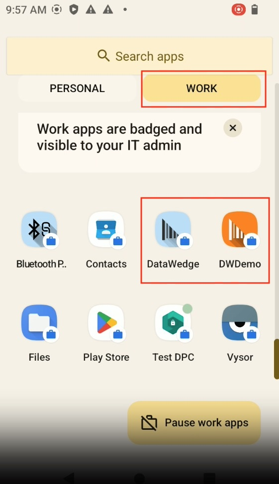

概要
複合用途の会社所有デバイスで Android ワーク プロファイルを使用すると、組織は個人データのプライバシーを保護しながら、企業ポリシーや制限を適用できます。以前は Corporate-Owned, Personally Enabled (COPE) と呼ばれていたこの構成により、1 台のデバイスで業務と個人の両方のニーズに対応でき、ワーク プロファイルと個人用プロファイルを柔軟に切り替えることができます。ワーク プロファイル機能により、企業データは、個人用アプリケーションから安全に分離され、ユーザーのプライバシーが保護されます。
ワーク プロファイル内で DataWedge を使用するには、 DataWedge とスキャン フレームワークの両方が、ワーク プロファイル内のシステム アプリケーションとして有効になっている必要があります。
Zebra は、DataWedge Manager CSP を使用して、デバイス管理者がワーク プロファイル内の DataWedge へのアクセスと構成を制御することを推奨しています。これには、ユーザーが DataWedge UI にアクセスできないようにし、構成ファイルの自動インポートを防止することも含まれます。
要件
- Zebra Android 13 以降のデバイス
- DataWedge v13.0.322 以降
DataWedge の有効化
DataWedge を ワーク プロファイル モードで操作するには、DataWedge と スキャン フレームワークの両方がワーク プロファイル内のシステム アプリとして有効になっている必要があります。これを実現するには、次の手順に従います。具体的な手順は、エンタープライズ モビリティ管理 (EMM) システムによって異なる場合があります。
次のいずれかの方法を使用して、DataWedge とスキャン フレームワークを有効にします。
- パッケージ名を追加します。
com.symbol.datawedgecom.symbol.scanning.scanningframework
- デバイス ポリシー コントローラ (DPC) 経由でアプリを追加する - 次の手順は、Google Play で提供されているサンプルのデバイス ポリシー コントローラである Test DPC を対象としていますが、他の EMM の DPC を使用する場合にも参考にできます。
- EMM からデバイス ポリシー コントローラを開きます。
- [ポリシー管理] で、[システム アプリを有効にする] をタップします。

- [DataWedge] をタップします。

- [システム アプリを有効にする] をもう一度タップします。
- [スキャン フレームワーク] をタップします。

- ワーク プロファイルで DataWedge とスキャン フレームワークが有効になります。「DataWedge」 と 「DWDemo」 の両方がワーク プロファイル内に表示されます。

注: ワーク プロファイルで DataWedge を有効にした後、初回の読み込みに時間がかかるため、すぐに開こうとしても正常に開かない場合があります。ただし、その後は正常に開くはずです。
DataWedge サポート対象機能
DataWedge は、ワーク プロファイルで次の機能のみをサポートします。
- バーコード入力 – 内蔵イメージャーによるバーコードのスキャン
- 音声入力 - 音声によるデータ キャプチャ
- キーストローク出力 – キーストロークを使用してスキャンしたデータを送信します
- インテント出力 - インテントを介してスキャンしたデータを送信します
- IP 出力 - TCP または UDP を使用して、スキャンしたデータを指定の IP アドレスに送信します
- Data Capture Plus – 画面上のボタンを使用してスキャンをトリガします
- ADF – 高度なデータ形式ルール
- BDF – 基本データ形式ルール
- DataWedge 構成のインポート/エクスポート
- 一括展開
制限事項
ワーク プロファイルの DataWedge の制限:
- SD カードのサポートは、Android 13 以降ではサポートされなくなったため、エクスポートされた DataWedge 構成ファイルをホスト PC にコピーするために SD カードのファイル パスを使用することはできません。
- ワーク プロファイルでは、次の DataWedge 機能はサポートされていません。
- シリアル入力
- Launcher プロファイルを使用したスキャン
個人プロファイルの動作
DataWedge とスキャン フレームワークをワーク プロファイルで有効にした後も、DataWedge は個人プロファイルに表示されたままになりますが、機能しません。これは、DataWedge が一度に 1 つのプロファイルでしか動作できないためです。DataWedge を個人プロファイルで機能させるには、工場出荷時の設定にリセットする必要があります。
注: DataWedge がワーク プロファイルで有効になる直前まで個人プロファイルで使用されていた場合、個人プロファイルでは自動的に終了します。これは、DataWedgeがワーク プロファイルで有効化された後、個人プロファイルでは動作しなくなるためです。